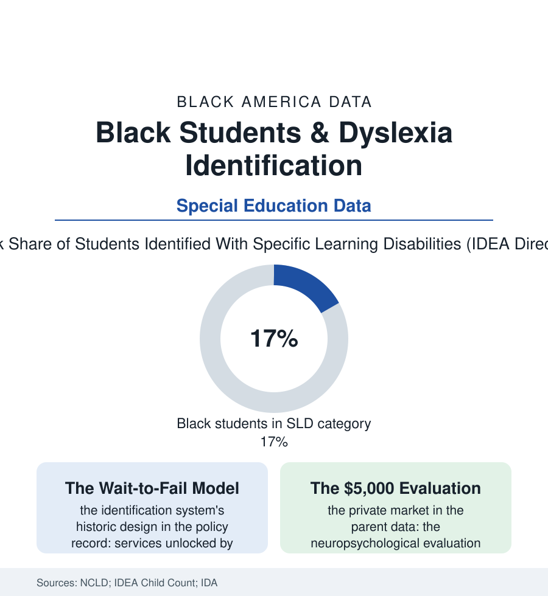

Black Education
The Unread Word: Dyslexia, Screening, and the Late Diagnosis
Dyslexia is the most common reading disability on earth — and its diagnosis, in the identification data, arrives latest and least for the Black children whose reading scores need it most. The dyslexia file.

Somewhere in every third-grade classroom in this atlas sits a child whose brain processes print differently — whose intelligence tests fine, whose effort is real, and whose reading is failing anyway. Dyslexia is the likeliest explanation on earth, and in the identification data, the Black child in that seat is the least likely to be handed the word that unlocks the help. This article reads the dyslexia file.
The Category and the Queue
The federal data route the diagnosis through a bureaucratic alias: specific learning disability, the largest single category of special education, its Black enrollment in the IDEA counts running somewhat above population share — a figure that conceals the file's true shape, because the SLD umbrella covers the identified while the reading science insists the identification itself is the scarce good. The reading researchers' arithmetic is blunt: dyslexia's prevalence in the population studies runs in the range of one child in ten to one in five on the spectrum's broad definition, its neurology indifferent to ancestry — while the school identification machinery, in district after district of the audit literature, finds it late, finds it unevenly, and finds it slowest where the reading file's emergency burns hottest. The mechanism has a name in the policy record: wait-to-fail — the discrepancy model under which services unlock only when the child's scores fall measurably behind her ability, a design that spends the early grades (the intervention literature's decisive window, when the brain's reading circuits are most plastic and the remediation's effect sizes are largest) waiting for the failure it exists to prevent. Layered over the delay is the explanation gap the parent interviews document: the Black child's reading failure attributed, in the school conference's folk taxonomy, to effort, to home literacy, to everything except the phonological processing the evaluator would test in an afternoon — the dialect file's confusion completing the circuit, the child's speech variety misread as the reading problem's cause rather than its innocent bystander. And beside the public queue stands the private market: the independent neuropsychological evaluation at its four-figure price, purchased by the families who know the word already — the diagnosis functioning, in the data's cruelest arrangement, as a consumer good whose distribution mirrors the wealth file while its underlying condition mirrors nothing but neurology.
The Screening Era
The correction is arriving as statute: the state dyslexia laws of the last decade — screening mandates, structured-literacy requirements, teacher-training hours — now cover most of the country's schoolchildren in the legislative counts, their design premise the file's whole argument (screen everyone early, in kindergarten and first grade, with the two-minute instruments the science validated; intervene on the flag, not on the failure; let the data, not the conference's impressions, open the door). The early implementation studies carry both halves of the expected news: identification counts rising toward the prevalence the science predicts — the found children disproportionately, in the first screening states' data, the ones the old model was missing — and the intervention capacity lagging the finding (the trained structured-literacy teacher, the tutoring hours of the intervention file, the queue reforming one door down, at the service rather than the name). The advocacy infrastructure of the Black dyslexia community — the parent organizations, the decoding-dyslexia chapters' Black leadership, the celebrity testimony of the culture file — works the awareness rows the parent data identify as the queue's first gate: a family cannot request an evaluation for a condition it has never heard named, in a community where the word's public face has been, for a century of media, somebody else's child. The file closes on the reading file's own stakes: the fourth-grade NAEP line, the graduation cliff, the literacy of the census section's adults — a meaningful share of all of it traces to the unread word of the third-grade classroom, and to whether anyone in the building was required to look for it while looking was cheap.
Reading the Dyslexia Data
The dyslexia file is the education section's parable of the named and the unnamed: the same neurology, in one child a diagnosis with services attached, in another a character report. The screening laws publish the new counts each year. The found children's reading scores — rising, in the early states, on schedule — are the review that matters.
More in Black Education
Black Educational Attainment: High School Parity, the College Gap
About 89 percent of Black adults hold a high school diploma and one in four holds a bachelor's degree or higher — the attainment ladder, the college completion gap, and the generational trend.
Historically Black Colleges and Universities: Enrollment and Degrees
More than 100 HBCUs enroll roughly 290,000 students and award about one in six Black bachelor's degrees — an outsized share from a small sector. The federal education data.
Black College Enrollment: 2.4 Million Students
About 2.4 million Black students are enrolled in American colleges — nearly two-thirds of them women. The NCES enrollment data by sector, level, and trend.
Source: National Center for Learning Disabilities; International Dyslexia Association; U.S. Department of Education IDEA Child Count; National Assessment of Educational Progress reading data.